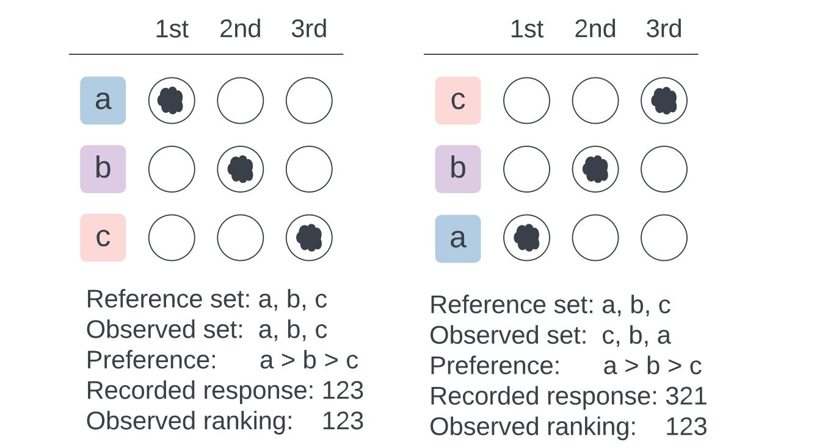
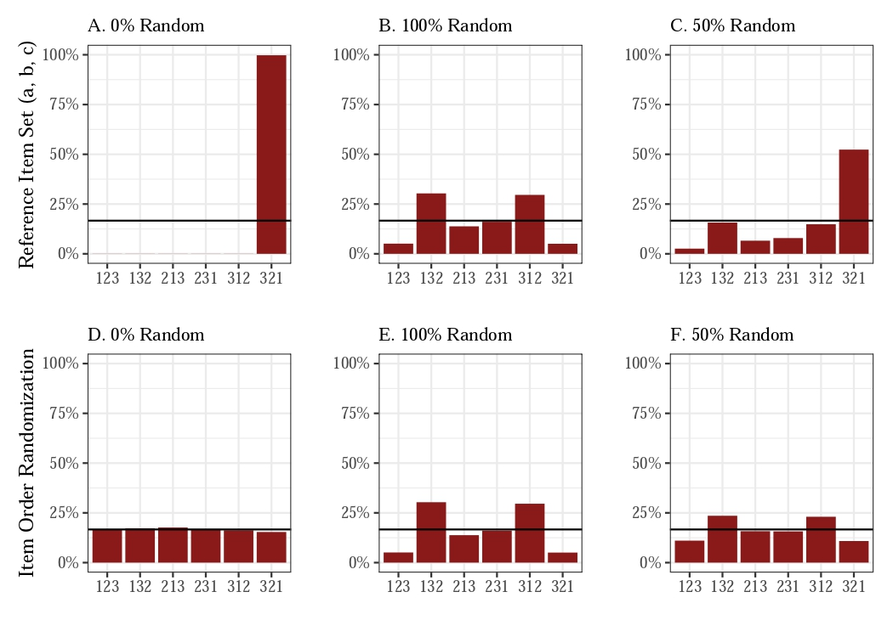

In this vignette, we show how to detect the presence of random responses using the uniformity test, which shows that given respondent-level item order randomization, recorded responses will follow a uniform distribution in the absence of random responses.
Recorded Responses
In an earlier vignette, we have shown how to perform the bias correction on ranking questions using the anchor question. But how do we know if there is a need for bias correction in the first place?
Distribution of rankings of recorded responses can show whether there are indeed random responses. Before we demonstrate this, first, we must ask: what are recorded responses? The following figure shows the difference between observed ranking and recorded response, given respondent-level item order randomization.

Suppose that I prefer items a-b-c in that order, and in the ranking exercise, they were presented in the order of a-b-c. Then, given the ordered reference set a-b-c, my observed ranking and recorded response are both 1-2-3. Recorded responses are identical to observed rankings when item orders are fixed. However, when an item order is not fixed, the observed choice set differs across respondents.
If, for example, the items were presented in the order of c-b-a, then my observed ranking is 1-2-3, but my recorded response is 3-2-1. This is because the observed ranking is the ranking of the items in the order of the reference set, regardless of the order in which they were presented. On the other hand, the recorded response is the ranking of the items in the order in which they were presented.
Uniformity Test
Theory
In Atsusaka and Kim (2024), we prove that once there is item order randomization, the recorded responses will follow a uniform distribution in the absence of random responses. Suppose, for example, that everyone prefers a-b-c in that order. Some respondents will have a recorded response of 1-2-3, while others will have 3-2-1, given the differently observed sets of items. Then, in the absence of random responses, the proportion of recorded responses for each possible ranking should converge to 1/24 = 0.0417, given that there are 4! = 24 possible ways to rank the items.
What happens with random responses? The figure below shows some likely scenario.

In this hypothetical world, suppose everyone prefers items in the order of c-b-a. With a reference item set of (a, b, c), the recorded responses will always be 3-2-1 (panel A). If item order is randomized, recorded responses will be uniformly distributed (panel D).
Now suppose that random responses occur in patterns such as panels B and E. If 50% of responses are random, recorded responses will be like panel C if the reference set is fixed for all respondents, or like panel F if the reference set is randomized!